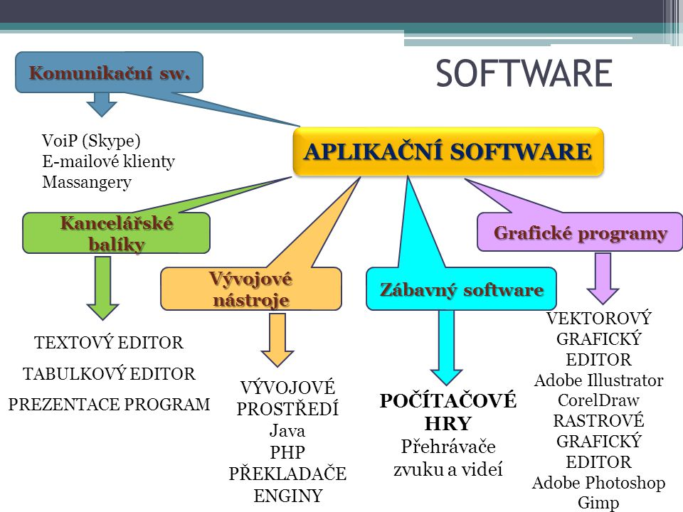

Aplikace jsou uživatelské programy určené pro jeden nebo více specifických účelů. Pro spouštění aplikací je nezbytná přítomnost základního softwaru - operačního systému.

(Základní teorie v provedení obrázku)
V této kapitole si probereme pár typů právě již zmíněného aplikačního softwaru.